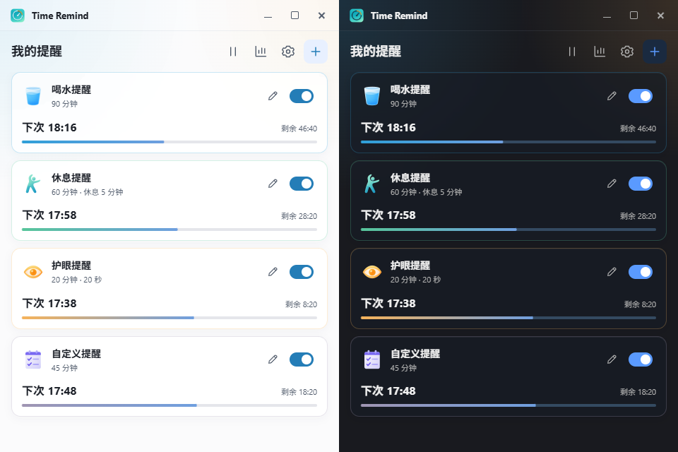
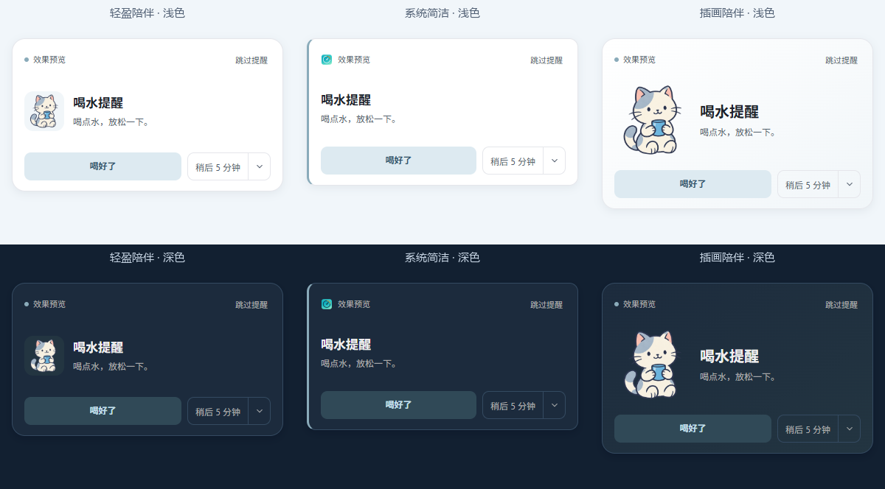
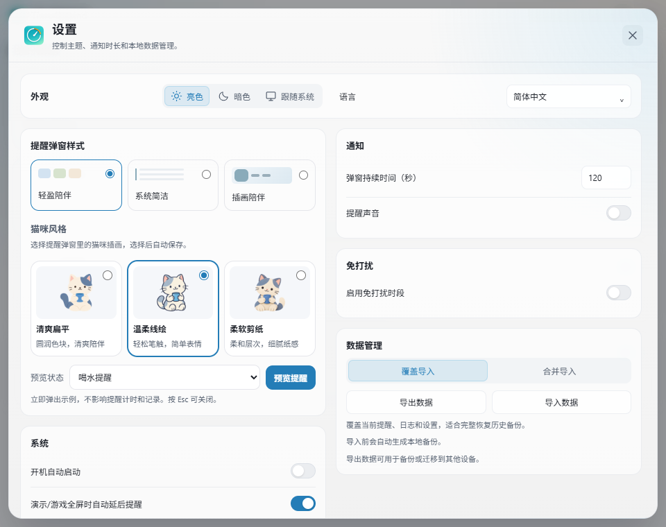

三类默认提醒
饮水、休息、护眼开箱即用，也可以自定义名称、文案、间隔和行动倒计时。
Time Remind 是一款轻量级桌面健康提醒工具，为长时间坐在电脑前的人设计。 它不打扰你的工作，只在合适的时候轻轻提醒你照顾自己。

功能
没有账号、没有云同步、没有后台服务。所有提醒和统计都在你自己的电脑上。
饮水、休息、护眼开箱即用，也可以自定义名称、文案、间隔和行动倒计时。
三种弹窗风格可选，支持完成、稍后 5 分钟、延后你保存的时长、跳过和超时处理。
设定专注或休息时段，期间不弹提醒，结束后按你的节奏继续。
Windows 下检测演示或游戏真全屏，自动延后提醒，不打断正事。
系统托盘菜单、开机自启、静默启动，安静待在角落随时可用。
今日统计、历史趋势和连续打卡，把坚持变成可回看的曲线。
一键导出与导入配置，换机或重装系统不用重新调一遍。
数据全部存在本地，不需要账号，提醒功能不依赖任何网络服务。
界面
内置柔和分类配色与三套猫咪插画，跟随语言切换提醒文案，同时保留你自己的修改。


下载
Windows 是当前已验证的发布平台。macOS 与 Linux 为社区预览包，欢迎反馈实机问题。
当前版本 v0.1.11 · 3 个平台可选
Windows Time-Remind_0.1.11_windows_x64_nsis.exe 下载 macOS Time-Remind_0.1.11_darwin_x64_dmg.dmg 下载 Linux Time-Remind_0.1.11_linux_amd64_deb.deb 下载Windows 安装包未做代码签名，首次运行可能提示未知发布者，选择"仍要运行"即可。
安装器最后一页可选"开机启动"和"静默启动到托盘"，默认都关闭，之后也能在设置里改。
按需要改间隔、文案、声音和免打扰时段，然后最小化到托盘，剩下的交给它。
常见问题
不需要。没有账号系统，提醒、设置、日志和统计都只在本地处理，核心功能不依赖任何网络服务。
当前安装包还没有代码签名，这是预期行为。确认下载来源是本仓库 Releases 后选择继续安装即可。
可以装，但属于社区预览：托盘、开机自启、锁屏和全屏检测等行为还没有完成实机验证。遇到问题欢迎提 Issue，这些平台的验证工作是公开的。
Windows 下会检测真全屏状态并自动延后提醒，也可以在设置里手动配置免打扰时段。
全部保存在本地。换机或重装系统前，用设置里的导出功能备份配置，之后导入即可恢复。